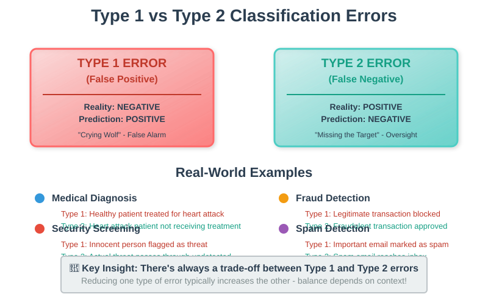
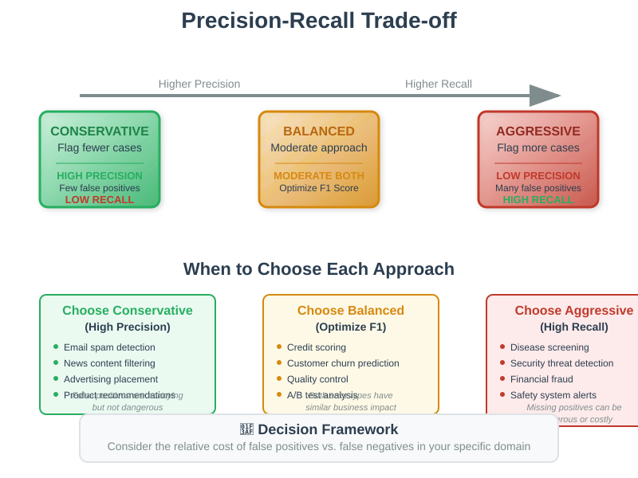
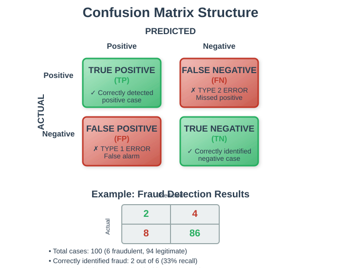
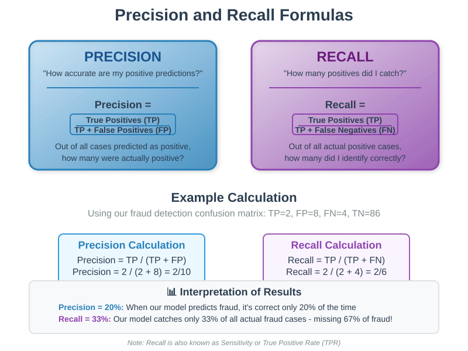
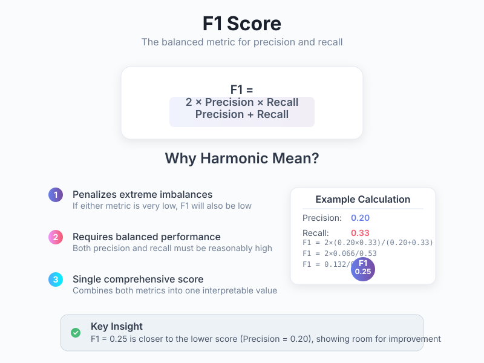

Classification Errors and Evaluation Metrics
🧭 Quick Navigation
- 📊 Overview
- ⚠️ Type 1 and Type 2 Errors
- 🏥 Real-World Examples
- ⚖️ Error Severity and Trade-offs
- 🎯 Classifier Evaluation Metrics
- 🔄 Confusion Matrix
- 📈 Precision and Recall
- 🎪 F1 Score
- 📊 Model Comparison
- 🔬 Practical Implementation
- 📚 References & Further Reading
📊 Overview
In binary classification problems, understanding and evaluating different types of errors is crucial for building effective machine learning systems. This documentation covers the fundamental concepts of Type 1 and Type 2 errors, along with essential evaluation metrics including Precision, Recall, and F1 Score.

Classification problems involving statistical methods based on numerical data face unique challenges:
- Data abundance vs. scarcity: Some domains have abundant data (spam detection), while others have limited data (clinical trials)
- Class imbalance: Often, one class is much more prevalent than another (e.g., only 1% of credit card transactions are fraudulent)
- Varying error severity: The implications of different types of misclassification can have dramatically different consequences
⚠️ Type 1 and Type 2 Errors
Understanding the Error Types
In binary classification, we encounter two fundamental types of errors:
Type 1 Error (False Positive) - Definition: Incorrectly classifying a negative case as positive - Example: Flagging a legitimate transaction as fraudulent - Impact: Can lead to inconvenience, loss of trust, or unnecessary interventions
Type 2 Error (False Negative)
- Definition: Incorrectly classifying a positive case as negative
- Example: Missing a fraudulent transaction, classifying it as legitimate
- Impact: Can lead to financial losses, missed opportunities, or dangerous oversights
Key Insights
The classification of errors as "Type 1" vs "Type 2" depends on: - Which category is designated as "positive" (the condition of interest) - The specific context and priorities of the application - The relative severity of different types of mistakes
🏥 Real-World Examples
Medical Fraud Detection
Scenario: Insurance company evaluating medical claims
Categories: - Positive: Fraudulent claim - Negative: Legitimate claim
Type 1 Error: - What happens: Legitimate claim flagged as fraud - Consequences: Healthcare provider must waste time proving validity, potential loss of customers if frequent
Type 2 Error: - What happens: Fraudulent claim approved as legitimate - Consequences: Direct financial loss, encouragement of future fraud
Heart Attack Diagnosis
Scenario: Emergency room patient with severe symptoms
Categories: - Positive: Patient having heart attack - Negative: Patient not having heart attack
Type 1 Error: - What happens: Healthy patient treated for heart attack - Consequences: Unnecessary treatment, patient discomfort, resource waste
Type 2 Error: - What happens: Heart attack patient not treated properly - Consequences: Potentially fatal, severe health complications
⚖️ Error Severity and Trade-offs

The Fundamental Trade-off
There exists a fundamental trade-off between Type 1 and Type 2 errors:
- With a fixed amount of data, reducing Type 1 errors typically increases Type 2 errors
- The optimal balance depends on the relative severity of each error type
- Context-specific factors determine which error type should be minimized more aggressively
Severity Assessment Framework
| Scenario | Type 1 Severity | Type 2 Severity | Recommended Approach |
|---|---|---|---|
| Spam Detection | Low (legitimate email in spam) | Medium (spam in inbox) | Balanced |
| Fraud Detection | Medium (inconvenience) | High (financial loss) | Minimize Type 2 |
| Medical Diagnosis | High (unnecessary treatment) | Critical (missed diagnosis) | Minimize Type 2 |
| Security Screening | Medium (false alarm) | Critical (missed threat) | Minimize Type 2 |
🎯 Classifier Evaluation Metrics
Why Simple Accuracy Isn't Enough
Consider a credit card fraud detector that labels everything as "legitimate": - Accuracy: 99% (since only 1% of transactions are fraudulent) - Usefulness: 0% (it never detects any fraud)
This example illustrates why we need more nuanced evaluation metrics that provide insight into different aspects of classifier performance.

🔄 Confusion Matrix
The confusion matrix is a fundamental tool for understanding classifier performance:
Matrix Structure
| | Predicted | | | | Fraud | Legitimate | | Actual Fraud | True Positive (TP) | False Negative (FN) | | Actual Legitimate | False Positive (FP) | True Negative (TN) |
Four Key Outcomes
- True Positive (TP): Correctly identified positive cases
- False Positive (FP): Type 1 error - incorrectly flagged as positive
- False Negative (FN): Type 2 error - missed positive cases
- True Negative (TN): Correctly identified negative cases
Example Analysis
For a fraud detection system with the following confusion matrix:
| Predicted Fraud | Predicted Legitimate | |
|---|---|---|
| Actual Fraud | 2 | 4 |
| Actual Legitimate | 8 | 86 |
- Total fraud cases: 6 (2 + 4)
- Total legitimate cases: 94 (8 + 86)
- Correctly classified fraud: 2 out of 6
- Incorrectly flagged legitimate: 8 out of 94
📈 Precision and Recall

Precision
Definition: How often is the classifier correct when it predicts positive?
Precision = True Positives / (True Positives + False Positives)
Interpretation: "What proportion of positive identifications was actually correct?"
Example: Precision = 2/(2+8) = 0.2 = 20%
Recall (Sensitivity)
Definition: How much of the actual positive cases does the classifier detect?
Recall = True Positives / (True Positives + False Negatives)
Interpretation: "What proportion of actual positives were identified correctly?"
Example: Recall = 2/(2+4) = 0.33 = 33%
The Precision-Recall Trade-off
Aggressive Classifier (flags many cases as positive): - ✅ High Recall: Catches most positive cases - ❌ Low Precision: Many false positives
Conservative Classifier (flags few cases as positive): - ✅ High Precision: Most flagged cases are correct - ❌ Low Recall: Misses subtle positive cases
🎪 F1 Score

Harmonic Mean Approach
When we need a single metric that balances both Precision and Recall, the F1 Score uses the harmonic mean:
F1 = 2 × (Precision × Recall) / (Precision + Recall)
Why Harmonic Mean?
The harmonic mean has a crucial property: it emphasizes the smaller value of the two inputs.
Harmonic Mean Formula:
H.M.(X,Y) = 2XY / (X + Y)
This ensures that: - If either Precision or Recall is very low, F1 Score will be low - Both metrics must be reasonably high for a good F1 Score - The F1 Score is closer to the smaller of the two values
Example Calculation
Using our fraud detection example: - Precision = 0.2 - Recall = 0.33
F1 = 2 × (0.2 × 0.33) / (0.2 + 0.33) = 0.249
📊 Model Comparison
Evaluation Metrics Summary
| Metric | Formula | Purpose | Best Use Case |
|---|---|---|---|
| Accuracy | (TP+TN)/(TP+FP+FN+TN) | Overall correctness | Balanced datasets |
| Precision | TP/(TP+FP) | Positive prediction quality | When false positives are costly |
| Recall | TP/(TP+FN) | Positive case coverage | When false negatives are costly |
| F1 Score | 2×(P×R)/(P+R) | Balanced performance | When you need one metric |
Choosing the Right Metric
Use Precision when: - False positives are expensive or harmful - You want high confidence in positive predictions - Example: Email spam detection (false positives annoy users)
Use Recall when: - False negatives are dangerous or costly - You want to catch as many positive cases as possible - Example: Disease screening (missing cases is dangerous)
Use F1 Score when: - You need a single balanced metric - Both precision and recall matter equally - Comparing multiple models objectively
🔬 Practical Implementation
Google Colab Integration

# Example implementation
from sklearn.metrics import precision_score, recall_score, f1_score, confusion_matrix
import numpy as np
# Example predictions and true labels
y_true = np.array([1, 1, 0, 1, 0, 0, 1, 0, 0, 0])
y_pred = np.array([1, 0, 0, 1, 1, 0, 0, 0, 0, 0])
# Calculate metrics
precision = precision_score(y_true, y_pred)
recall = recall_score(y_true, y_pred)
f1 = f1_score(y_true, y_pred)
print(f"Precision: {precision:.3f}")
print(f"Recall: {recall:.3f}")
print(f"F1 Score: {f1:.3f}")
Hugging Face Models
Explore pre-trained classification models: - 🤗 BERT for Sequence Classification - 🤗 RoBERTa for Classification - 🤗 DistilBERT for Efficiency
Best Practices
- Always visualize your confusion matrix
- Consider the business context when choosing metrics
- Use cross-validation for robust evaluation
- Monitor multiple metrics to get a complete picture
- Understand your data distribution and class imbalance
📚 References & Further Reading
Core Papers
- "The Precision-Recall Plot Is More Informative than the ROC Plot When Evaluating Binary Classifiers on Imbalanced Datasets" - Saito & Rehmsmeier (2015)
- "Learning from Imbalanced Data" - He & Garcia (2009)
Educational Resources
- Scikit-learn Classification Metrics - Comprehensive metric documentation
- Google's Machine Learning Crash Course - Classification fundamentals
Advanced Topics
- "Cost-Sensitive Learning" - Elkan (2001)
- "The Relationship Between Precision-Recall and ROC Curves" - Davis & Goadrich (2006)
Practical Applications
- Fraud Detection in Financial Services - Real-world case studies
- Medical Diagnosis Classification - Healthcare applications
This documentation provides a comprehensive foundation for understanding classification errors and evaluation metrics. For hands-on practice, explore the provided Colab notebooks and experiment with real datasets.